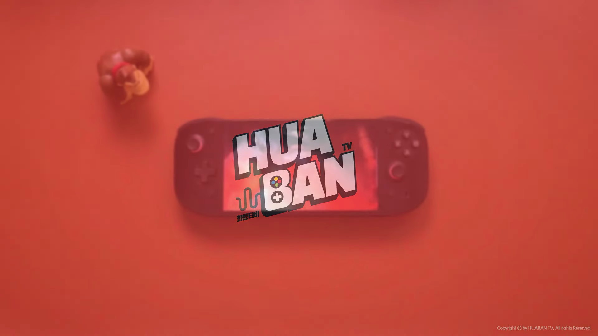

이번 블로그 포스트에서는 오딘 2 포탈 게임기의 기능, 디자인 및 성능을 다양한 측면에서 심층적으로 분석했습니다. 최신 스냅드래곤 칩을 탑재하고, 매력적인 OLED 디스플레이를 제공하는 이 게임기가 과연 게이머에게 어떤 경험을 제공할지 살펴보겠습니다. 
오딘 2 포탈 소개
- 신제품 게임기 ‘오딘 2 포탈’ 출시
- 중국 내수 예약 판매로 구매
- 춘절 연휴 전에 기기 수령
오딘 2 포탈은 최근 출시된 게임기로, 중국 내수 시장에서 예약 판매를 통해 구매한 제품입니다. 다행히 춘절 연휴 전에 기기를 수령해 리뷰를 진행하게 되었습니다.
디자인과 화면
- 오딘 2와 유사한 스냅드래곤 젠 2 탑재
- 7인치 OLED 디스플레이, 해상도 높음
- 안드로이드 및 레트로 게임에 적합
오딘 포탈은 오딘 2와 동일한 스냅드래곤 젠 2를 탑재하고 있으며, 7인치 OLED 디스플레이가 특징입니다. 더 큰 화면으로 향상된 화질을 제공하고 있으며, 안드로이드 게임과 레트로 게임 모두에 적합한 기기입니다.

패키지 및 디자인
- 포장 상태 우수, 하드 케이스 포함
- 심플한 디자인의 기기 박스
- 컬러 옵션 다양함 (블랙, 화이트, 퍼플)
기기는 안정된 하드 케이스로 포장되어 있으며, 전체적으로 심플한 겉모습이지만 세련된 느낌을 줍니다. 컬러 옵션으로는 블랙, 화이트, 퍼플이 제공되어 개인의 취향에 맞게 선택할 수 있습니다.
조작성 및 버튼 반응
- 키 배치와 조작감 개선
- 버튼의 소음 문제 언급
- 아날로그 스틱의 꺾임 각도 향상
키 배치가 개선되었고, 조작감도 나쁘지 않지만 버튼 소음이 다소 발생할 수 있습니다. 또한 아날로그 스틱의 꺾임 각도가 깊어져 더 나은 조작감을 제공합니다.
전반적인 사용 경험
- 고성능 게임기로써 만족스러운 성능
- 발열 및 소음 처리 우수함
- 디자인 개선으로 강한 인상
오딘 2 포탈은 게임기 품질이 뛰어나고, 성능 또한 뛰어난 편입니다. 발열과 소음 억제를 잘하며, 무엇보다도 디자인이 예쁘고 현대적인 느낌이 강합니다.
Tags: #오딘 2 포탈 #게임기 #스냅드래곤 젠 2 #OLED 디스플레이 #디자인 #성능